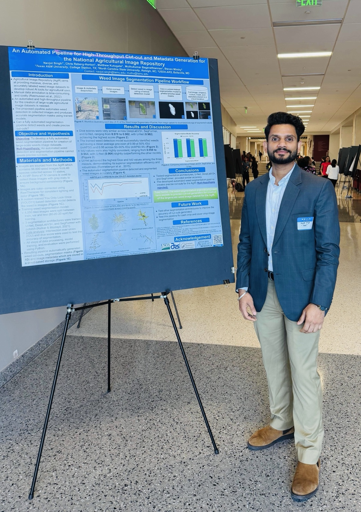
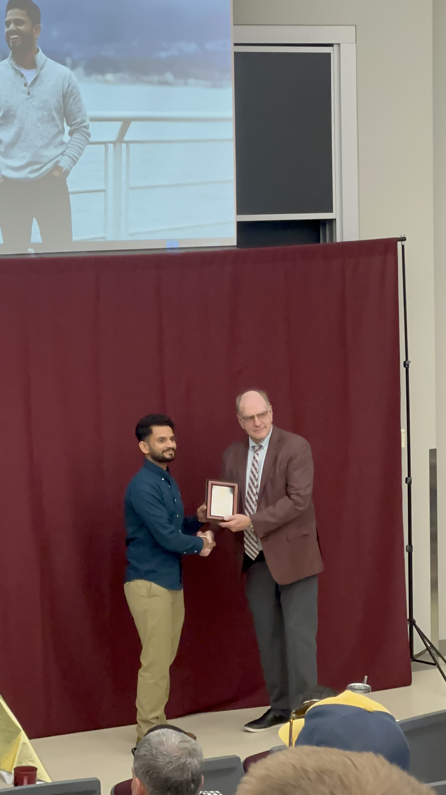
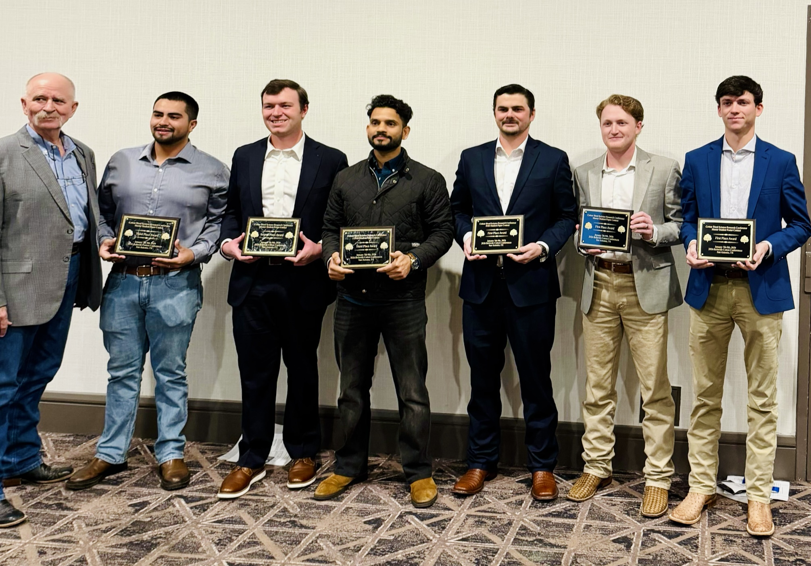
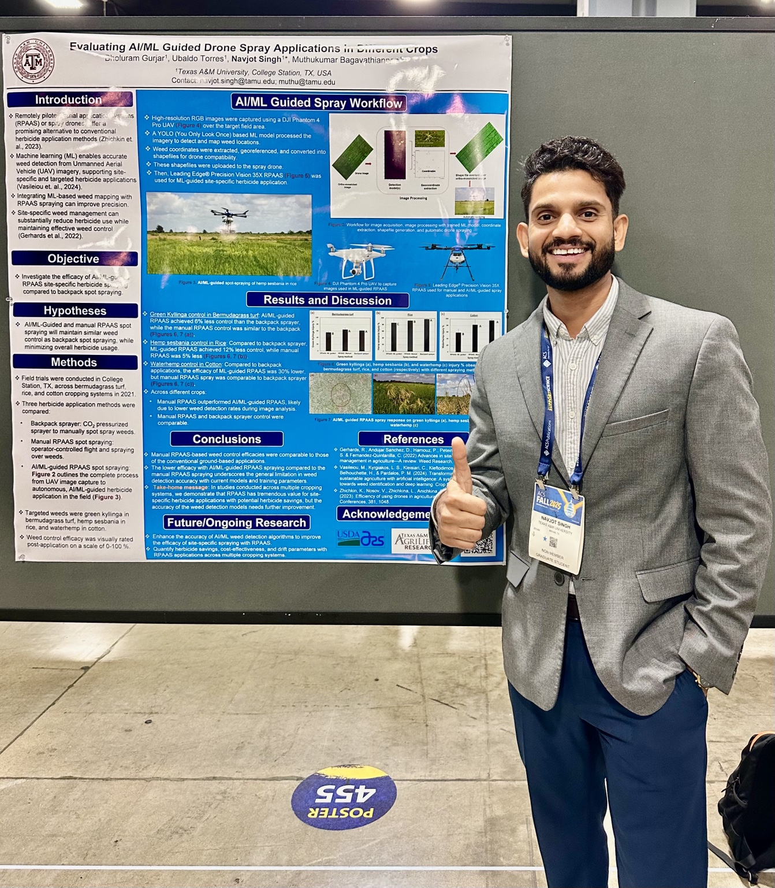
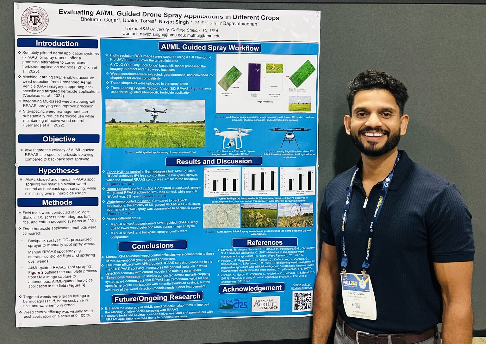
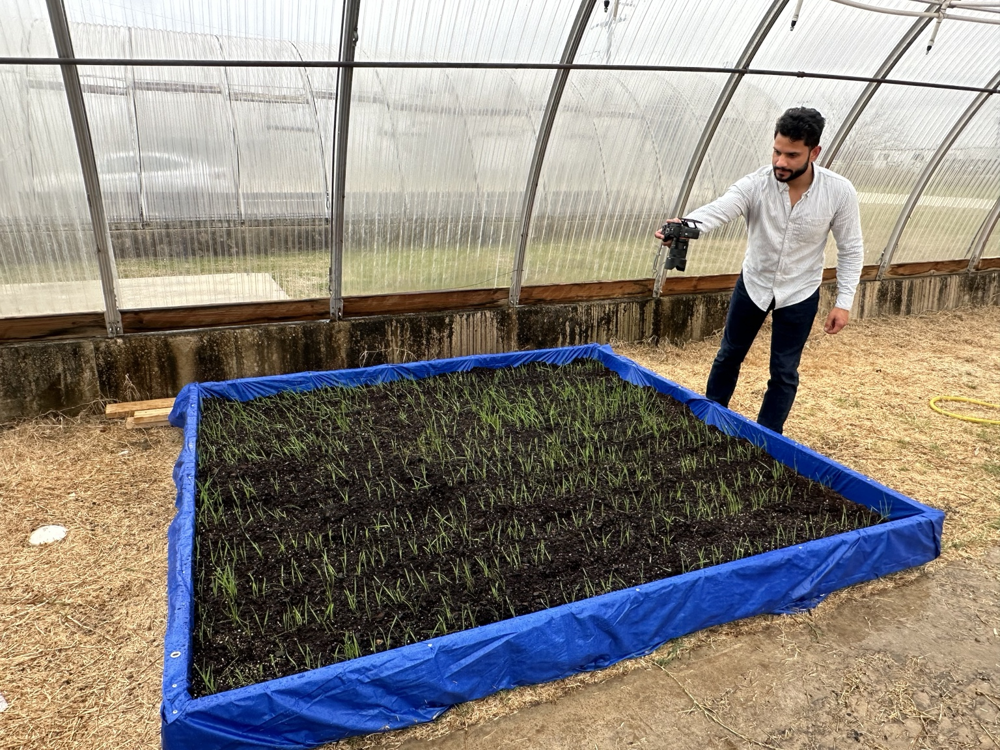

About
Digital agriculture, field research, and applied AI.
Precision Agriculture Research Associate and PhD student at Texas A&M focused on applying machine learning, computer vision, and data engineering in digital agriculture. Passionate about leveraging drones and AI for smarter crop and weed management.
Top Skills
Research Toolkit
FiftyOne
Dataset curation and computer vision workflow support.
Agronomy
Crop science, field trials, and water-use efficiency research.
Drone
UAV-based imaging, NDVI mapping, and precision scouting.
Machine Learning
Applied models for weed, crop, and field-condition analysis.
Experience
Research and Field Science
PhD Student
Texas A&M University
Precision Ag Research Associate
Texas A&M University
Weed Science Tech.
University of Florida, Pensacola, Florida
Research Technician
Lab for Atmospheric Biogeosciences, University of Georgia
Graduate Research Student
University of Georgia, Griffin, Georgia
Selected Research
Field Studies and Digital Agriculture Projects
Water-Use Efficiency in Peanut
Compared single-row and twin-row peanut planting patterns using eddy covariance, soil temperature, and soil moisture sensors.
Planting Date and Peanut Water Use
Evaluated how different planting dates affect peanut water-use efficiency through field measurements and eddy-covariance data.
NDVI-Based Irrigation Planning
Used drone-mounted multispectral cameras to detect water stress and calibrate NDVI maps with field and plant-water data.
Pecan Orchard Water Stress
Measured evapotranspiration and environmental controls to support better irrigation decisions in pecan orchards.
Education
Academic Background
Texas A&M University
Doctor of Philosophy, Digital Ag Weed Science
Started July 2024The University of Georgia
Master's degree, Agronomy and Crop Science
2016 - 2018Punjab Agricultural University
BS, Agriculture, General
2011 - 2015Gallery
Field and Research Moments







